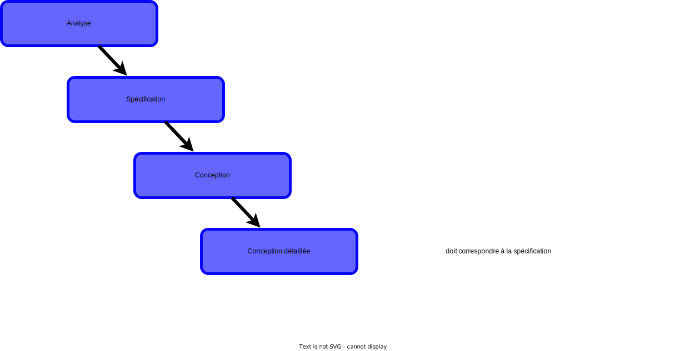
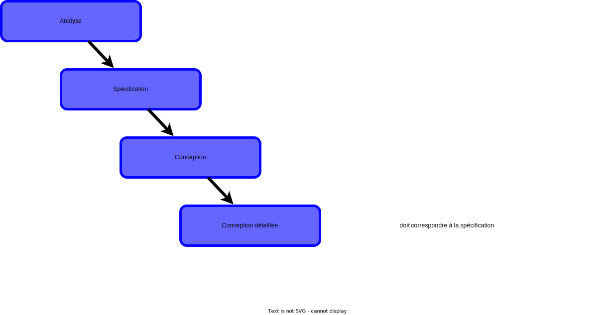

2A - Bachelor Universitaire de Technologie
IUT d'Orsay - Université Paris-Saclay - 2023/2024
IUT d'Orsay - Université Paris-Saclay - 2023/2024

Cycle de développement


 



Exemple d'introduction
Définitions
- Un paquetage regroupe des éléments de la modélisation appelés membres, portant sur un sous-ensemble du système.
-
Le découpage en paquetage doit traduire un découpage logique
du système correspondant à des espaces de nommage homogènes. -
Un paquetage permet de grouper n'importe quelle éléments d'UML
dans des unités de plus haut niveau.
- classes, composants, cas d’utilisation, ..., et d’autres paquetages.
Présentation d'un paquetage
Nom d'un paquetage
-
Chaque paquetage doit avoir
un nom différent
(espace de nommage). -
Les éléments contenus dans un paquetage se distinguent
par leur appartenance au paquetage englobant.
- deux éléments de deux paquetages peuvent avoir le même nom.
- deux éléments du même paquetage doivent avoir des noms différents.

Nom d'un élément

-
Le nom d’un élément est dit simple s’il est utilisé seul.
- la classe
Roue
- la classe
-
Le nom d’un élément est dit complet s’il est précédé par les noms
des paquetages englobants (name space).- la classe
voiture::systeme-acceleration::Roue
- la classe
La visibilité
- Les éléments d’un paquetage peuvent avoir une visibilité:
- de type public (par défaut)
- de type privé (
private: non visible à l'extérieur du paquetage).
Relation de dépendances
- Une relation de dépendance doit exister dès que deux éléments issus de deux paquetages sont associés.
- hormis les cas de dépendances implicites (emboîtement de paquetages)
- C'est une relation unidirectionnelle entre paquetages.
- une modification de la cible peut impliquer une modification de la source
- Une relation de dépendance se représente par une flèche en pointillé.
Exemple
Importation de paquetage
- Pour simplifier l'utilisation des éléments contenus dans un autre paquetage, on peut utiliser l'importation.
- Ceci permet d’importer l’espace de nommage d’un autre paquetage.
Exemple
On peut avoir accès à tous les membres du paquetage importé sans utiliser le nom du paquetage importé.
Le paquetage C a accès aux classes C1,C2 et C4.
Accès à un paquetage
- Pour accéder aux éléments d'un paquetage à partir d'un autre paquetage, il faut utiliser le nom complet.
Exemple
L’espace de nommage n’est pas importé et ne peut être transmisà d’autres paquetages par transitivité.

Le paquetage C a accès à la classe C4 seulement.
Définitions
- Le découpage en paquetages doit traduire un découpage logique
du système correspondant à des espaces de nommage homogènes. - La structuration d’un modèle dans un diagramme de paquetages s’appuie sur deux principes fondamentaux :
- La cohérence : consiste à regrouper les éléments de modélisation proches d’un point de vue sémantique.
- L’indépendance : consiste à renforcer ce découpage initial en s’efforçant de minimiser les dépendances entre les paquetages.
Le principe de cohérence
- La cohérence consiste à regrouper les éléments
proches d’un point de vue sémantique en suivant les critères suivants:
- finalité : les classes doivent rendre des services de même nature.
- évolution : les classes stables doivent être isolées de celles qui vont évoluer (les classes métiers et les classes applicatives).
- cycle de vie des objets : les classes doivent être distinguées selon que leurs objets ont une durée de vie identique ou pas.
Quel découpage ?

NEW SLIDE

NEW SLIDE